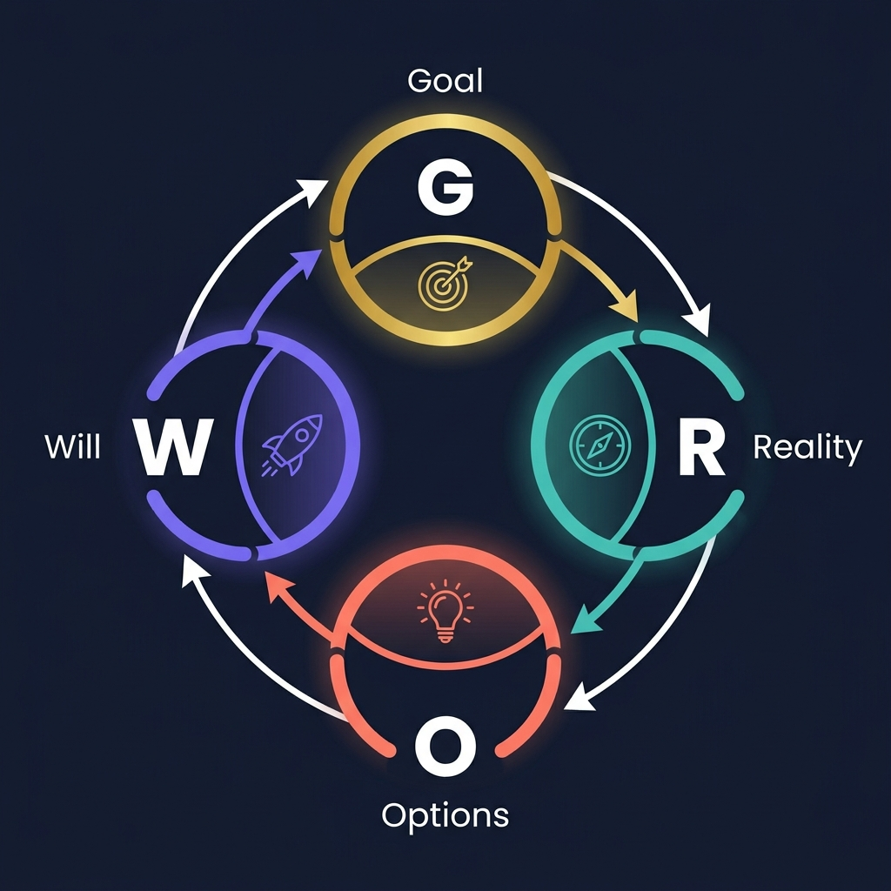
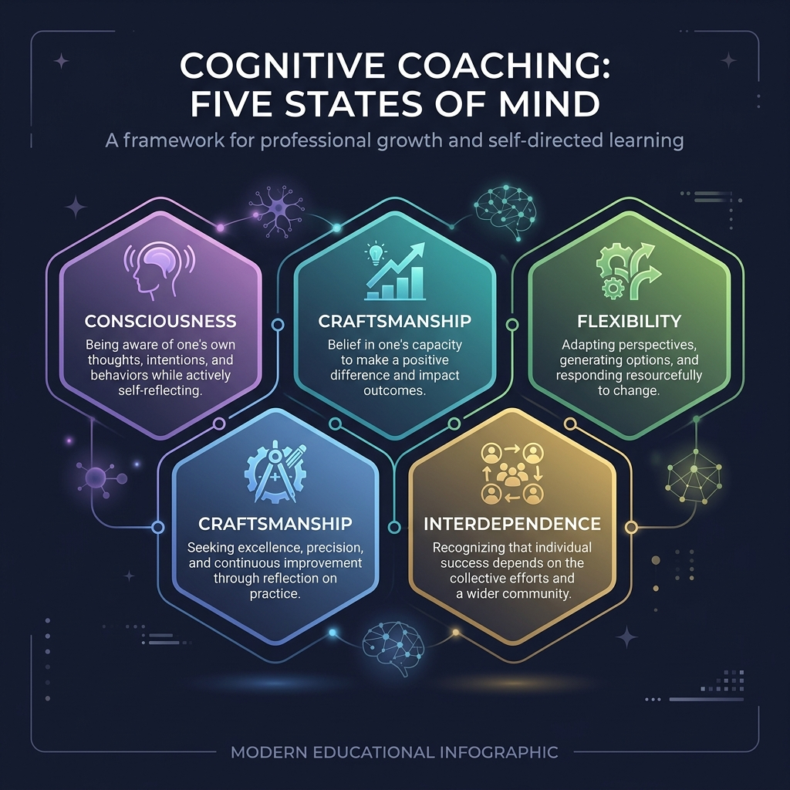
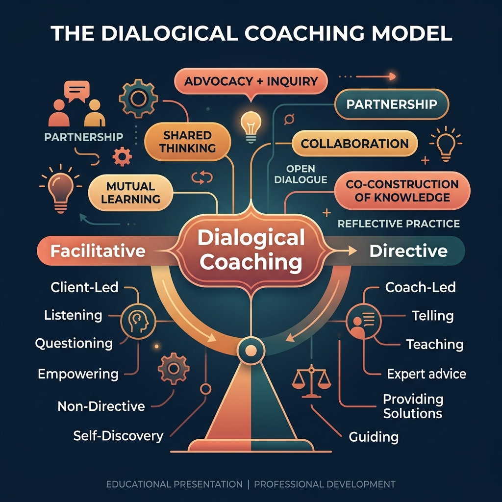

An in-depth look at three research-based coaching models and a defense of the Dialogical approach for school/district implementation.
Presented by: Moreland
M.Ed. Educational Technology — Spring 2026
John Whitmore writes, "The coach is not a problem solver, a teacher, an adviser, an instructor or even an expert; he or she is a sounding board, facilitator… who raises awareness and responsibility."
A coaching model provides a structured framework for instructional coaches to guide meaningful, goal-oriented conversations with teachers.
Effective coaching models prioritize the teacher-coach relationship, positioning the teacher as an autonomous professional with valuable expertise.
Research consistently shows that high-quality coaching improves teacher practice and, ultimately, student outcomes across all content areas.
Developed by Sir John Whitmore in the 1980s, GROW is a structured, goal-oriented coaching framework widely adopted in both business and education.

Define a clear, measurable objective. "What do you want to achieve?"
Assess the current situation honestly. "What is happening now?"
Brainstorm multiple strategies and possibilities. "What could you do?"
Commit to specific actions and accountability. "What will you do?"
Developed by Arthur Costa and Robert Garmston, Cognitive Coaching fosters self-directed learning by transforming educators' internal thought processes.

Metacognitive awareness
Pursuit of excellence
Belief in one's impact
Perspective-taking
Collaborative spirit
Championed by Jim Knight, the Dialogical model occupies the productive middle ground between facilitative and directive coaching — a true partnership of equals.

Coach acts as a sounding board; withholds expertise to let teachers self-discover. Risk: teachers may lack access to evidence-based strategies.
The sweet spot. Coach shares expertise as a partner while honoring teacher autonomy. Both voices carry equal weight in the conversation.
Coach as expert trainer; prescribes strategies for fidelity. Risk: undermines teacher ownership and professional identity.
The coach balances sharing evidence-based strategies (advocacy) with asking powerful questions and listening deeply (inquiry).
Neither coach nor teacher is positioned as the expert. Knowledge is co-constructed through authentic professional dialogue.
A practical framework: Identify (current reality + goals) → Learn (new strategies) → Improve (implement, measure, adapt).
How do these three models differ across key dimensions of instructional coaching?
| Dimension | GROW Model | Cognitive Coaching | Dialogical Coaching |
|---|---|---|---|
| Developer | Sir John Whitmore | Costa & Garmston | Jim Knight |
| Core Focus | Goal achievement | Self-directed thinking | Partnership & shared expertise |
| Coach Role | Question-based facilitator | Mediator of thinking | Equal partner |
| Teacher Role | Goal-setter & action-planner | Self-reflective practitioner | Co-constructor & decision-maker |
| Knowledge Sharing | Minimal; coach asks, not tells | Withheld; teacher discovers | Shared openly as suggestions |
| Structure | 4-step linear cycle | Planning/Reflecting maps | Impact Cycle (Identify → Learn → Improve) |
| Best For | New coaches; quick goal-setting | Deep cognitive transformation | Balanced, practical coaching at scale |
| Training Required | Low–Medium | High (certification) | Medium |
After examining all three models, I am choosing to implement the Dialogical Coaching model in my school/district setting. Here is my detailed rationale and implementation plan.
The Dialogical model, as articulated by Jim Knight, resonates most deeply with my philosophy of coaching because it honors teachers as professionals while still giving the coach permission to share knowledge. In my school, teachers often express frustration when coaches either withhold useful strategies (pure facilitative approach) or impose a top-down mandate (directive approach). The Dialogical model threads this needle perfectly.
Introduce Jim Knight's partnership principles to all staff through a PD session. Distribute The Impact Cycle as shared reading for the coaching team. Establish coaching norms rooted in equality, choice, voice, dialogue, reflection, praxis, and reciprocity.
Begin Impact Cycles with 8–10 volunteer teachers across content areas. Use video observation and student data to collaboratively set PEERS goals (Powerful, Easy to measure, Emotionally compelling, Reachable, Student-focused).
Expand to all interested teachers. Coach and teacher pairs meet biweekly to progress through Identify → Learn → Improve cycles. Ongoing data collection to measure student impact.
Analyze aggregated student outcome data. Share success stories at faculty meetings. Refine coaching protocols based on teacher feedback. Train additional coaches using the dialogical framework.
My district values teacher empowerment and professional growth, making the partnership principles of the Dialogical model a natural fit. Teachers have expressed a desire for coaching that is collaborative rather than evaluative. Because the Dialogical model explicitly separates coaching from evaluation and positions the teacher as the decision-maker, it addresses teachers' concerns about autonomy while still providing the research-based strategies they need. The Impact Cycle's emphasis on measurable student outcomes also aligns with district goals for data-informed instruction.
All sources used in this presentation, formatted in APA 7th Edition style.